Alarm
운영 중인 각 서비스들의 상태를 확인할 수 있고 서비스에서 발생한 알람의 장애 현황 및 이력 관리를 할 수 있습니다.
서비스 알람 대응
Alarm App을 통해 서비스 운영 중 발생한 장애에 대응하는 방법을 설명합니다.
1. 서비스 별 담당자 지정
사용자가 등록한 서비스 그룹 별로 장애 발생 시 알람을 받을 사용자(Receiver)와 처리할 담당자(Assignee)를 지정합니다.
Alarm - Configuration - Members-
사용자를 관리할 서비스 그룹 선택 후, [Edit Member] 버튼을 클릭합니다.
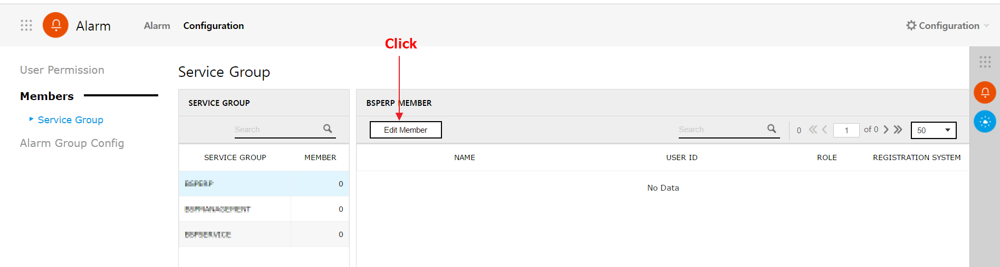
-
왼쪽 목록에 전체 사용자가, 오른쪽 목록에 현재 서비스 그룹의 알람을 받을 사용자가 표시됩니다.
해당 서비스 그룹의 알람을 받을 사용자를 왼쪽 목록에서 선택해 오른쪽 목록에 추가합니다.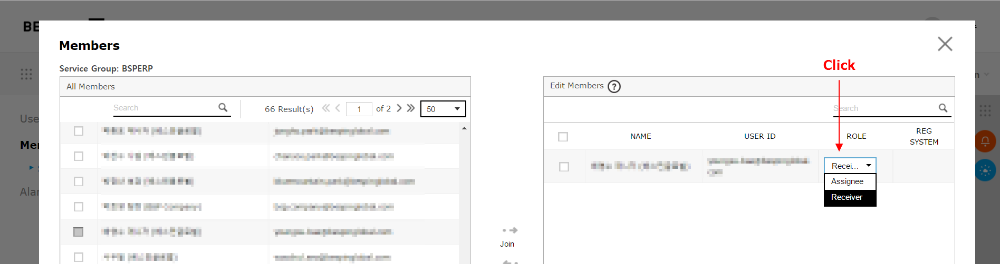 -
오른쪽 목록에 추가한 사용자의 권한을 설정합니다.
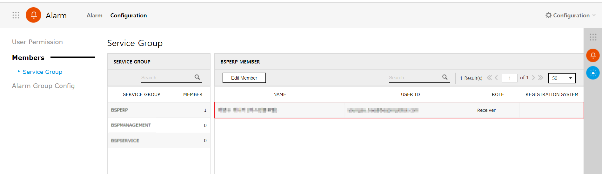
두가지 권한 중 사용자에게 하나의 권한만을 부여할 수 있습니다. 이 권한은 서비스 그룹 별로 다르게 지정할 수 있습니다.
- Receiver: 알람의 발생, 변경에 따른 공지를 이메일로 수신만 할 수 있습니다.
- Assignee: 알람의 발생, 변경에 따른 공지를 이메일로 수신할 수 있고 알람으로 받은 장애의 처리 상태를 기록할 수 있습니다.
-
[OK] 버튼을 클릭해 변경 내용을 저장합니다. 서비스 그룹 별 사용자 목록에서 알람을 받을 사용자가 추가되었는지 확인합니다.
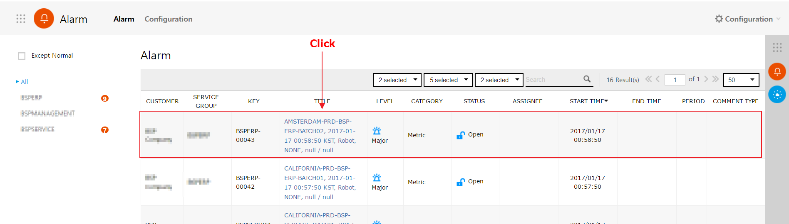
선택한 서비스 그룹의 Receiver와 Assignee 설정이 완료되었습니다.
다른 서비스 그룹에 대해서도 동일한 과정을 통해 Receiver와 Assignee를 지정할 수 있습니다.
2. 알람 내용 확인
알람을 받은 Receiver, Assignee가 발생한 알람의 상세 내용을 확인합니다.
Alarm-
알람 목록에서 내용을 확인할 알람을 클릭합니다.
알람 목록에서는 발생한 알람의 요약 정보를 확인할 수 있습니다. -
알람의 상세 내역을 확인합니다.
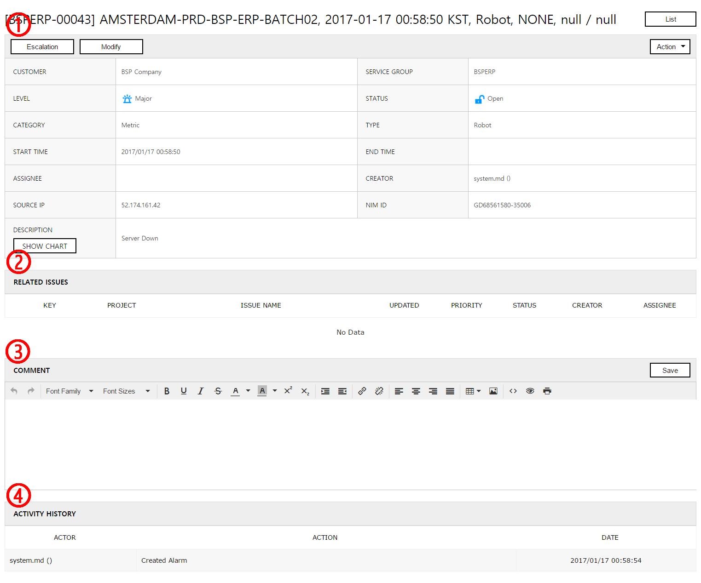
① 알람 상세: 발생한 알람의 상세 정보를 확인할 수 있습니다.
② 연관 업무: 발생한 이슈와 연관된 업무 정보를 표시합니다.
③ 코멘트: 알람에 대한 코멘트를 남길 수 있으며, 다른 사용자들이 남긴 코멘트를 확인할 수 있습니다.
④ 알람 히스토리: 발생한 알람에 대한 이력을 표시합니다. -
[Show Chart] 버튼을 클릭해 알람 발생 당시의 Metric 정보를 확인할 수 있습니다.
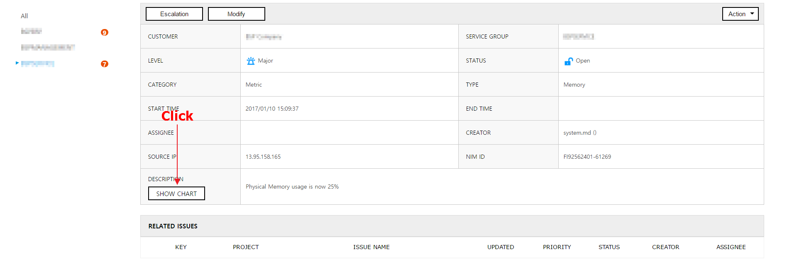
-
알람 발생 당시의 Metric 정보가 새 창으로 표시됩니다.
3. 알람 처리
알람 내용을 확인한 Assignee가 알람 처리를 시작할 때, 이 알람이 현재 처리 중임을 표시하고 처리하고 있는 Assignee를 표시합니다.
3.1 조건을 설정해 검색
-
검색할 조건을 선택합니다. [Status] 버튼을 클릭하면 드롭다운 메뉴로 선택 가능한 조건이 표시됩니다.
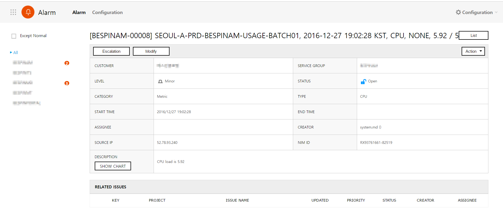
-
[Action] 버튼을 클릭해 표시되는 드롭다운 목록에서 [Start] 버튼을 클릭합니다.
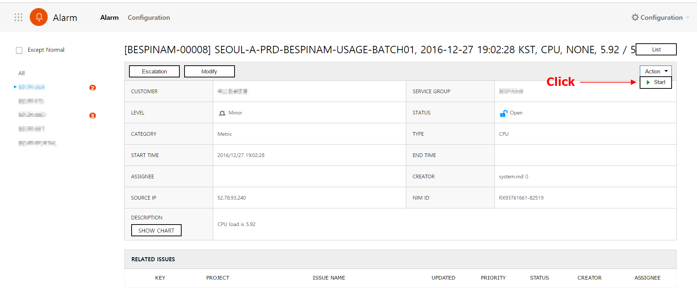
-
[Action] 버튼을 클릭해 표시되는 드롭다운 목록에서 [Start] 버튼을 클릭합니다.
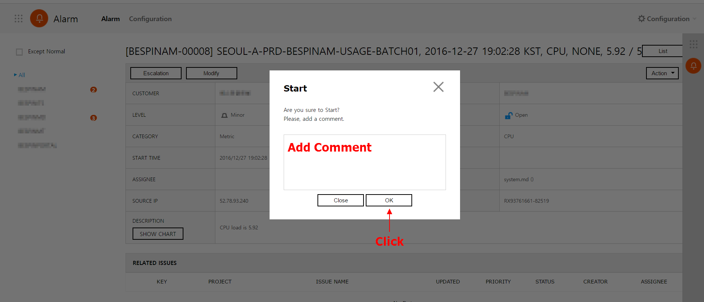
-
알람의 'Status'가 'In-progress'로 변경되고 'Assignee'에 처리 담당자의 '이름'이 표시됩니다.
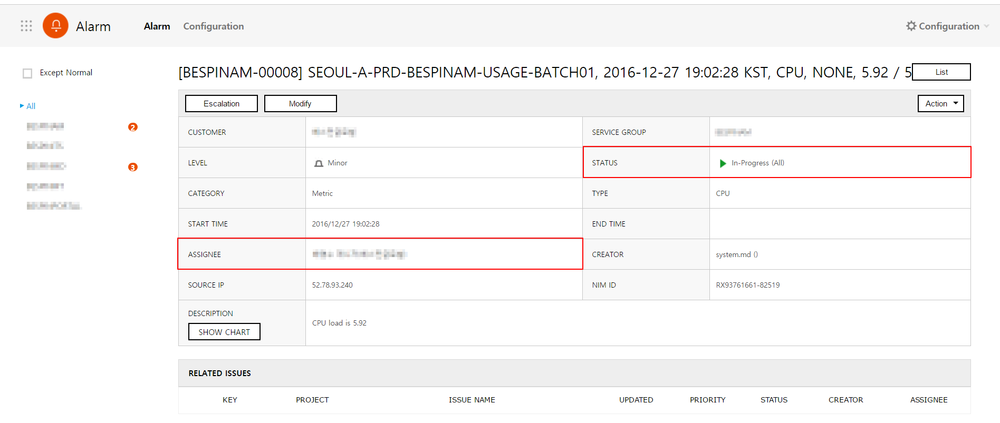
- 알람를 해결하기 위한 작업을 수행합니다. 이 알람를 해결하기 위한 업무는 Project App에 등록합니다. 알람 해결과 관련된 업무의 등록은 아래 4. 알람 이력 및 연관 업무 관리 내용을 참고해 주세요.
3.2 알람 등급 변경
발견된 알람가 심각한 경우, 알람로 인해 발생한 알람의 등급을 승격시킵니다. 반대로 발생한 알람의 등급을 낮출 수 있습니다.
-
알람 목록에서 내용을 확인할 알람을 클릭해 알람의 상세 내역 화면으로 이동합니다.
-
'Level'을 변경하고 변경 사유를 'Description'에 입력합니다. 입력 후 [Escalation] 버튼을 클릭합니다.
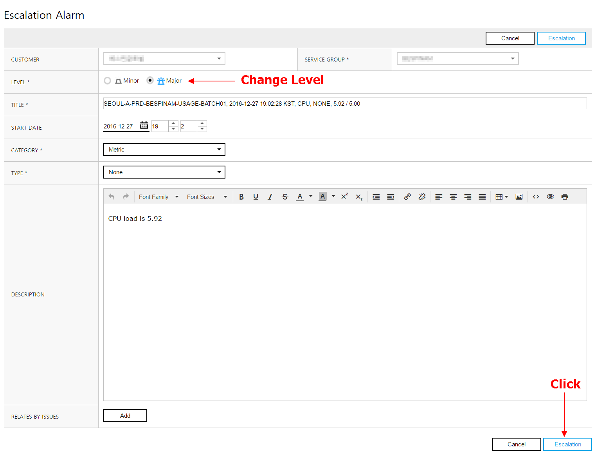
기존 'Level' 이 'Minor' 인 경우, [Escalation] 버튼 클릭 시 자동으로 'Major'로 변경됩니다.
3.3 알람 처리 완료
발생한 알람에 대한 처리 완료 후, 해당 알람로 인해 발생한 알람의 해결되었음을 표시합니다.
-
알람 내역에서 [Action] 버튼을 클릭해 표시되는 드롭다운 목록에서 [Close] 버튼을 클릭합니다.

-
"Close" 팝업이 표시됩니다. 작업 완료에 따른 코멘트를 입력하고 [OK] 버튼을 클릭합니다.
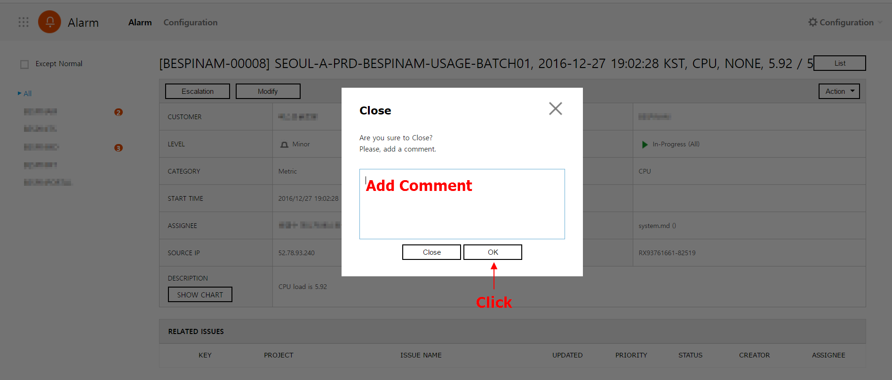
-
알람의 'status'가 'Closed'로 표시되고 'End Time'이 표시됩니다. 그리고 'Solution' 항목에 처리 완료 시 입력한 코멘트와 완료 시각이 표시됩니다.
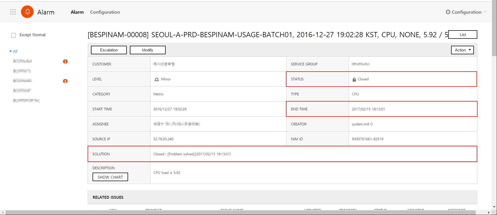
-
알람 목록에서 해당 알람의 처리가 완료되었음을 확인할 수 있습니다.
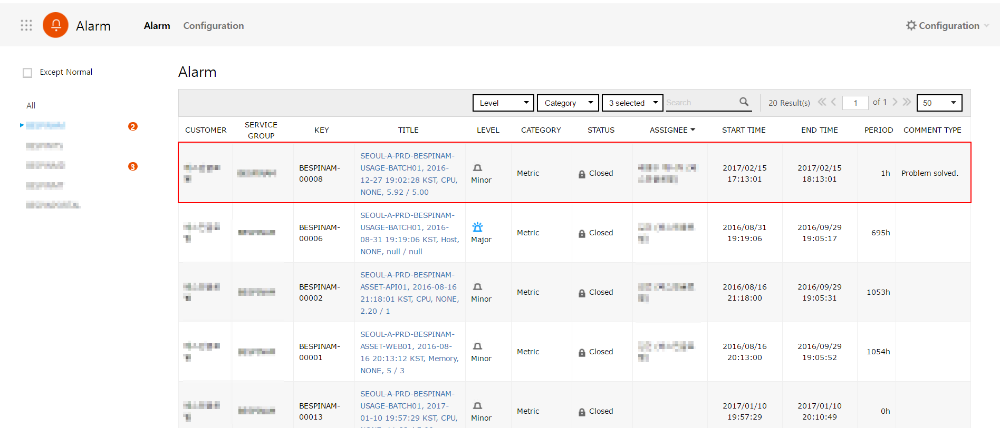
4. 알람 처리 이력 및 연관 업무 관리
알람로 인해 발생한 알람의 시작부터 종료까지의 처리 과정을 확인하고, 이 과정에서 발생한 연관 업무들을 등록할 수 있습니다.
4.1 알람 처리 이력 보기
-
알람 내역 화면에서 가장 아래의 "Active History" 영역으로 이동합니다.
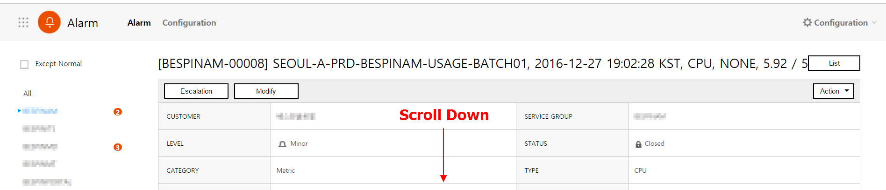
-
"Active History" 영역에는 알람의 처리 시작, 코멘트 작성, 내용 수정, 처리 종료까지의 모든 과정의 기록이 시간순으로 표시됩니다. 기본적으로 가장 최신의 이력이 상위에 표시됩니다.
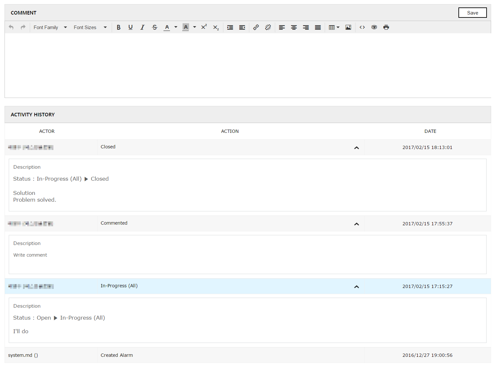
-
테이블 헤더를 클릭해 정렬 조건을 변경할 수 있습니다.
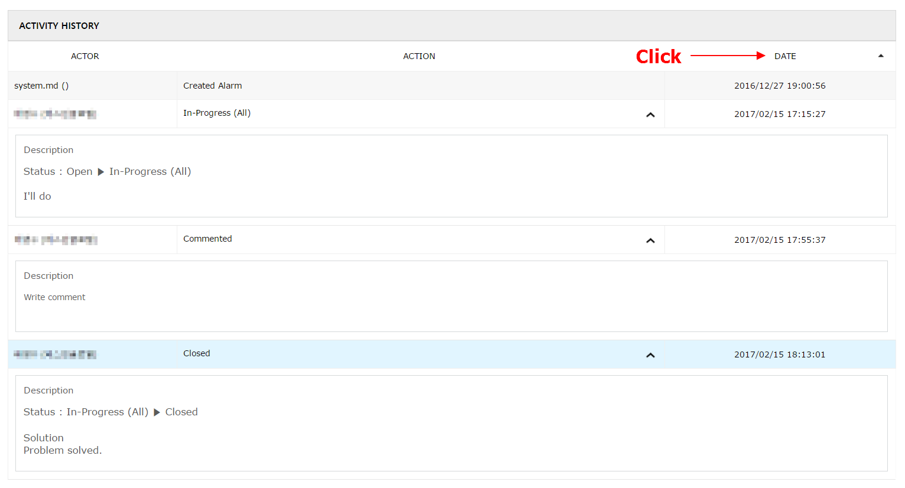
4.2 연관 업무 등록
알람 해결을 위한 업무를 Project App에 등록하고, 이를 알람 내역에 연결할 수 있습니다.
이를 통해 이 알람를 해결하기 위해 어떤 작업이 진행되고 있는지, 반대로 이 업무가 어떤 알람를 해결하기 위함인지를 빠르게 확인할 수 있습니다.
-
알람 내역 화면에서 [Modify] 버튼을 클릭합니다.
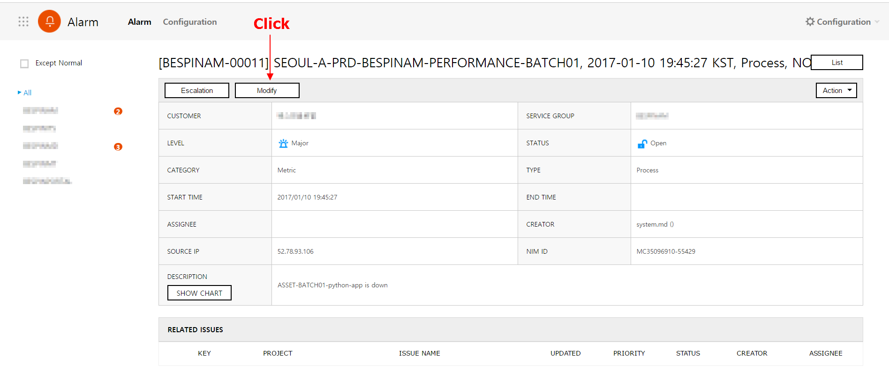
-
"Modify Alarm" 화면에서 'Relates by issue' 항목의 [Add] 버튼을 클릭합니다.
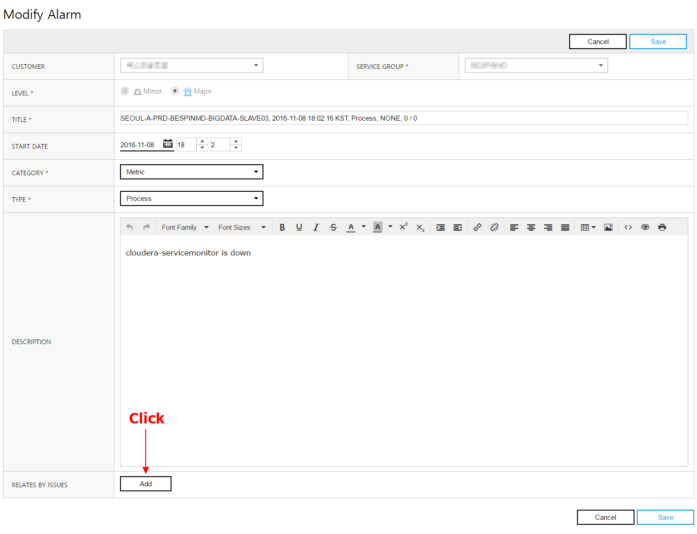
-
"Search for Issues" 팝업이 표시됩니다. 이 팝업에는 Project App에 등록된 업무들의 목록이 표시됩니다. 연결한 업무를 프로젝트, 상태, 제목으로 검색할 수 있습니다. 업무 목록에서 연결할 업무를 선택하고 [OK] 버튼을 클릭합니다.
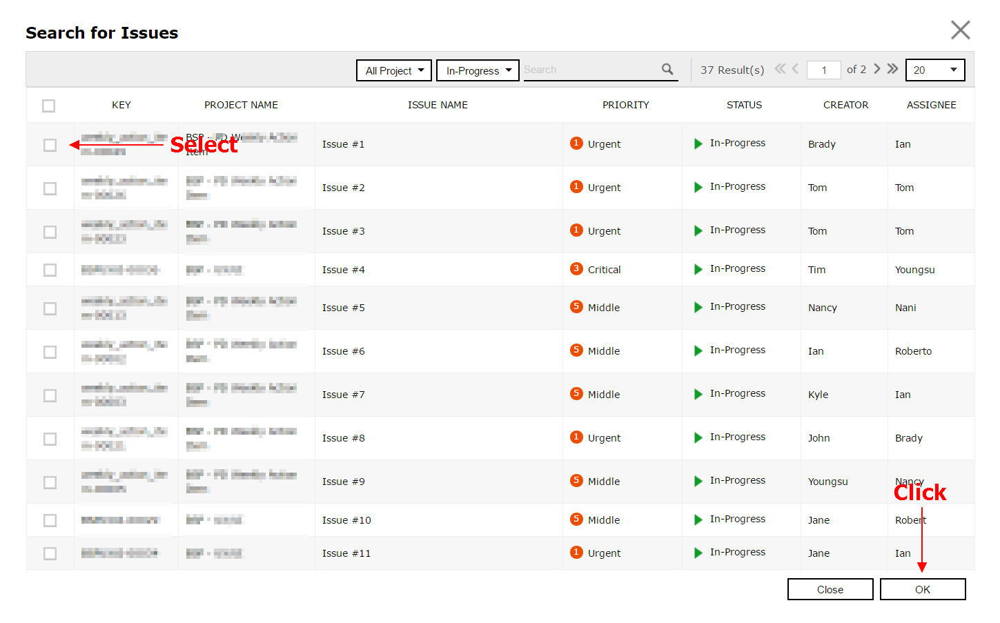
5. 알람 이력 검색
조건을 설정하고 키워드를 입력해 찾고자 하는 알람 이력을 검색하고, 그 내용을 확인할 수 있습니다.
5.1 서비스 그룹 별 알람 이력 보기
-
알람를 확인할 서비스 그룹을 클릭합니다.
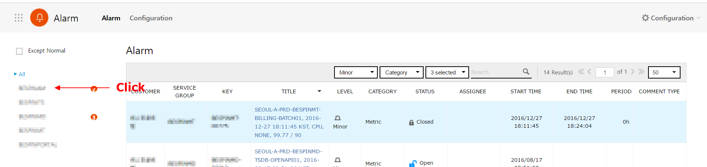
-
선택한 서비스 그룹에서 발생한 알람 이력이 알람 목록에 표시됩니다.
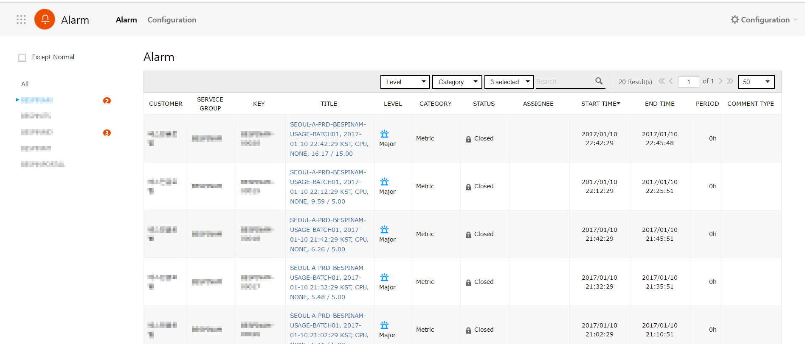
서비스 그룹 목록에서 현재 알람가 발생한 서비스 그룹을 확인할 수 있습니다.
알람이 발생한 서비스 그룹은 서비스 그룹 이름 옆에 현재 발생한 알람의 수가 표시됩니다.
5.2 조건을 설정해 검색
-
검색할 조건을 선택합니다. [level], [Category], [Status] 버튼을 클릭하면 드롭다운 메뉴로 선택 가능한 조건이 표시됩니다.
-
'Level' 조건 선택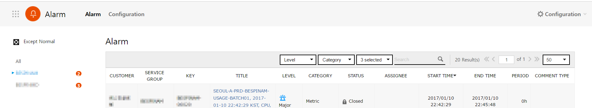 -
'Category' 조건 선택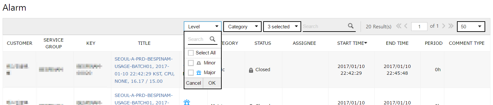 -
'Status' 조건 선택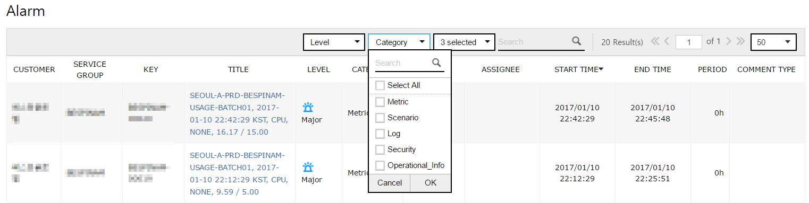
-
-
드롭다운 메뉴의 [OK] 버튼을 클릭합니다.
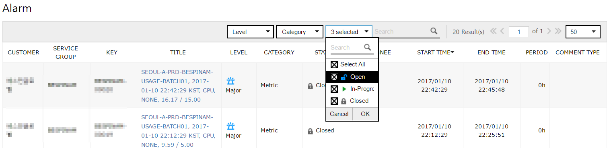
-
선택한 조건의 검색 결과를 알람 목록에서 확인할 수 있습니다.
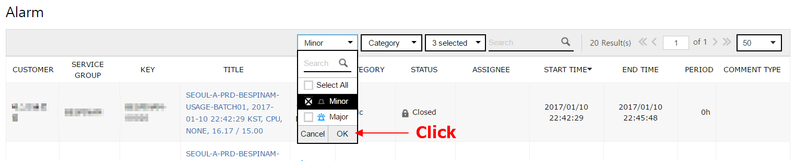
5.3 키워드를 입력해 검색
-
검색창에 검색할 키워드를 입력 후, [Enter]키 혹은 [검색] 버튼을 클릭합니다.
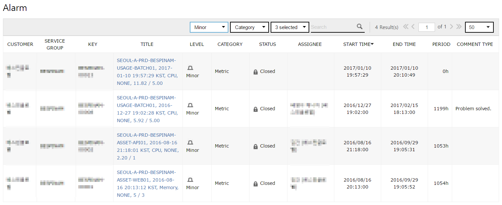
-
목록에 입력한 키워드와 일치하는 제목을 가진 결과가 표시됩니다. 입력한 키워드와 일치하는 텍스트가 하이라이팅되어 표시됩니다.
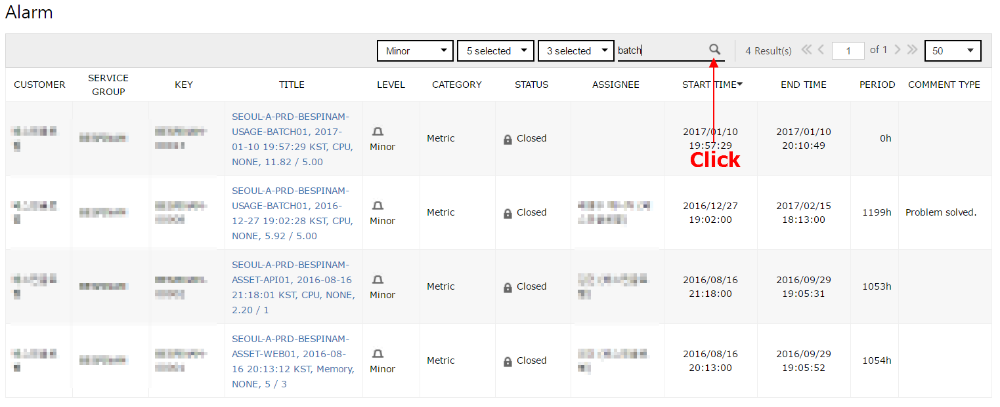